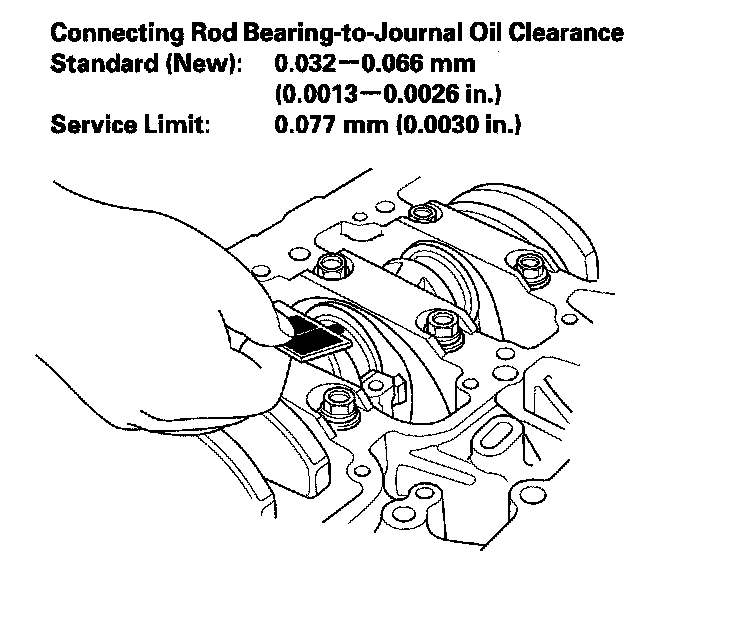
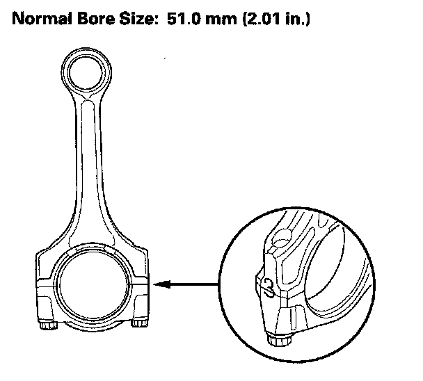
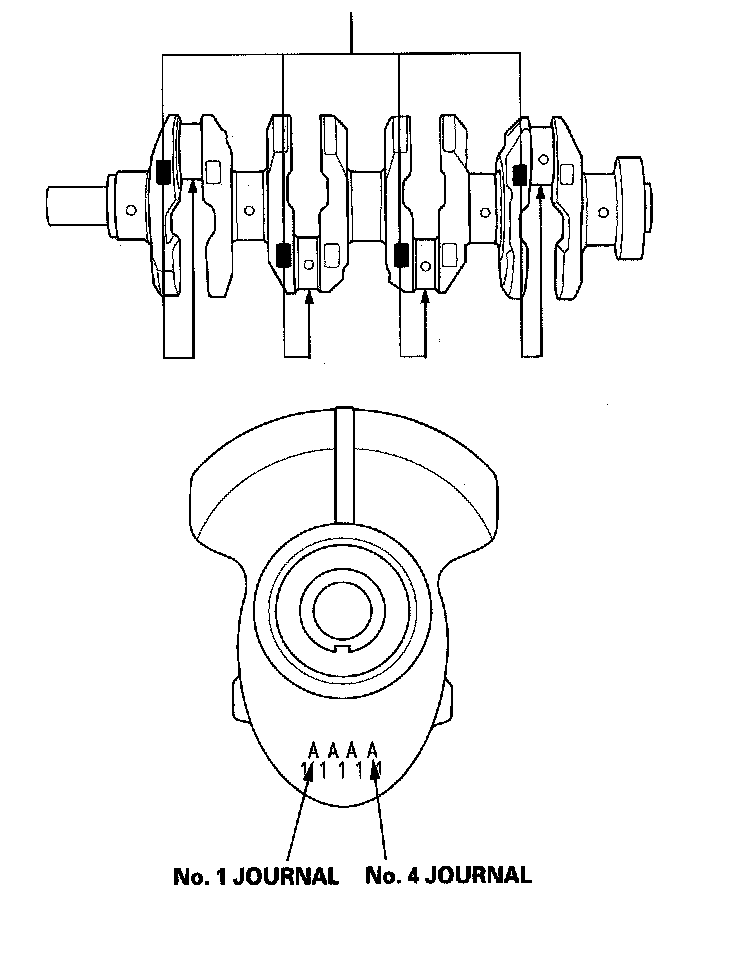
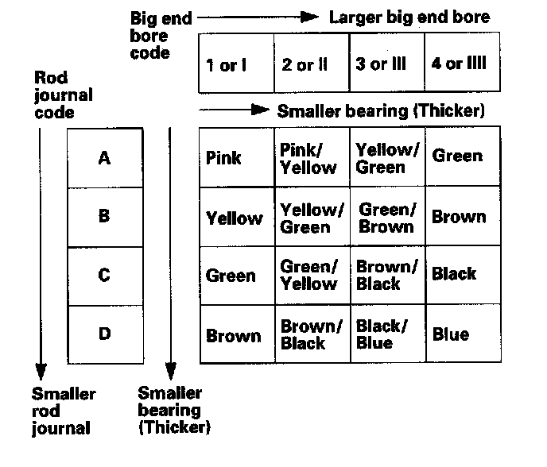

Connecting Rod Bearing Replacement
Connecting Rod Bearing ReplacementRod Bearing Clearance Inspection
1. Remove the oil pump.
2. Remove the baffle plates.
3. Remove the connecting rod cap and bearing half.
4. Clean the crankshaft rod journal and bearing half with a clean shop towel.
5. Place plastigage across the rod journal.
6. Reinstall the bearing half and cap, and torque the bolts to 29 N-m (3.0 kgf-m, 22 lbf-ft) + 90°
NOTE: Do not rotate the crankshaft during inspection.
7. Remove the rod cap and bearing half, and measure the widest part of the plastigage.

8. If the plastigage measures too wide or too narrow, remove the upper half of the bearing, install a new, complete bearing with the same color code(s), and recheck the clearance. Do not file, shim, or scrape the bearings or the caps to adjust clearance.
9. If the plastigage shows the clearance is still incorrect, try the next larger or smaller bearing (the color listed above or below the current one), and check clearance again. If the proper clearance cannot be obtained by using the appropriate larger or smaller bearing, replace the crankshaft and start over.
Rod Bearing Selection
1. Inspect each connecting rod for cracks and heat damage.
Connecting Rod Big End Bore Code Locations
2. Each rod has a tolerance range from 0 to 0.024 mm (0.0009 in.), in 0.006 mm (0.0002 in.) increments, depending on the size of its big end bore. It's then stamped with a number or bar (1, 2, 3, or 4/I, II, III, or IIII) indicating the range. You may find any combination of numbers and bars in any engine. (Half the number or bar is stamped on the bearing cap, the other half is on the rod.)
If you can't read the code because of an accumulation of oil and varnish, do not scrub it with a wire brush or scraper. Clean it only with solvent or detergent.

Connecting Rod Journal Code Location
3. The connecting rod journal codes are stamped on the crankshaft in either location.

4. Use the big end bore codes and rod journal codes to select appropriate replacement bearings from the following table.
NOTE:
^ The color code is on the edge of the bearing.
^ When using bearing halves of different colors, it does not matter which color is used in the top or bottom.
